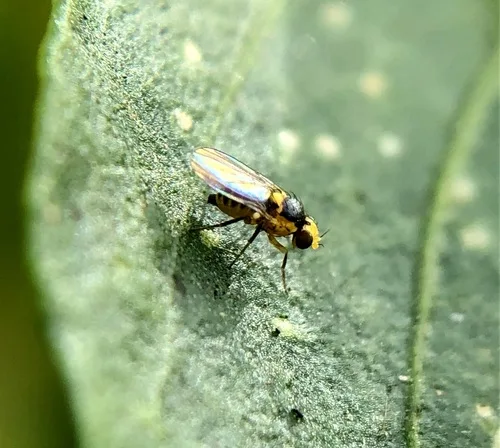

叶斑病
散在的黄白色斑点
这是与该表现相符的一种可能原因，请结合下方特征核对。

先看哪里
比较斑点与日晒方向、喷溅位置的关系，检查叶背虫迹。
可能原因与下一步
局部漂白可来自强光、喷液或取食。回顾新近搬动和叶面处理，先去除明显诱因。
怎样区分相似问题
比较向阳叶与遮阴叶。单侧漂白可能与暴晒有关；密集小点伴叶背活虫，更需排查虫害。
现在可以做什么
检查叶背并拍下斑点分布；不要把长期遮阴的植物突然移入全日照。
接下来观察什么
复查遮阴叶是否也新增浅斑；若有，记录查到的虫体或附着物。